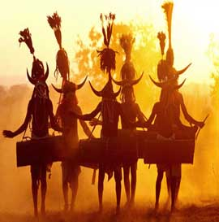
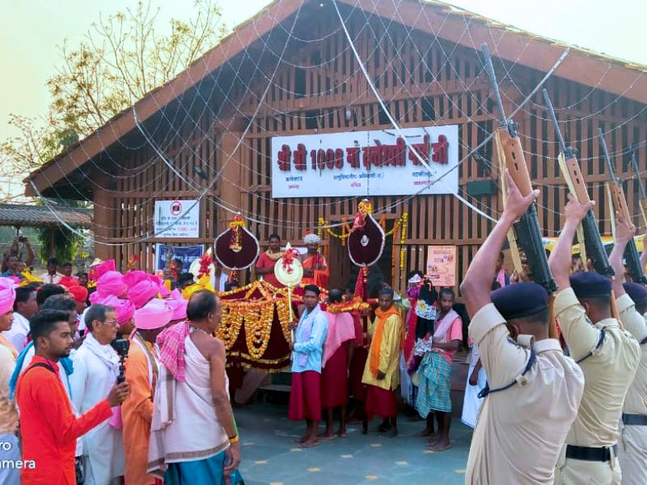
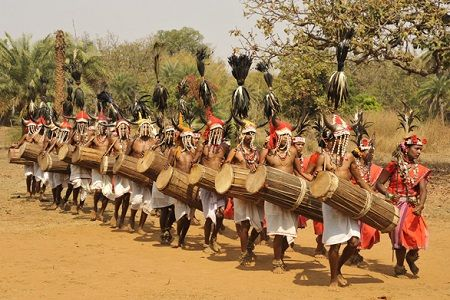

Welcome to Dantewada Culture
Explore the vibrant and diverse culture of Dantewada, a region rich in traditions, festivals, and crafts that showcase its unique heritage.
.jpg)
Tribal Culture
The rich tribal culture of Dantewada is marked by unique traditions, dances, and the famous Ghotul tradition of the Muria tribe.
Festivals
Dussehra and Madai Mela are the main festivals celebrated with grandeur and devotion in Dantewada.
Handicrafts
The region is known for its beautiful woodcraft, bamboo art, and bronze statues created by skilled artisans.
.jpg) Woodcraft
Woodcraft
.jpg) Bamboo Art
Bamboo Art
 Bronze Statues
Bronze Statues
Traditional Food
Enjoy the local delicacies like maize bread, red rice, and Mahua drink, which are the essence of Dantewada's culinary culture.
.jpg)
Religious Sites
The Dantewada district is home to the famous Danteshwari Temple, one of the 52 Shakti Peethas in India, symbolizing devotion and faith.
.jpg)
Music & Dance
The tribal communities of Dantewada are known for their vibrant music and dance forms like Dandami Maria and Ghotul dance, performed during special occasions and festivals.
